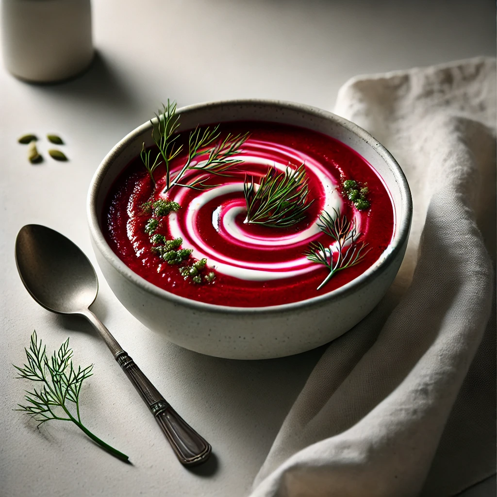

Rote Wintersuppe
Zutaten:
| etwas | Butter |
| 0.5 | Zwiebel(n), klein gewürfelt |
| 0.25 | Ingwer, geschält, fein gehackt |
| 0.25 | Apfel, fest, säuerlich, geschält, grob gewürfelt |
| 0.25 Liter | Weißwein oder Apfelwein |
| 0.25 Liter | Gemüsebrühe |
| 0.5 | Rote Bete, geschält, gewürfelt |
| 0.5 | Kartoffel(n), klein, geschält, gewürfelt |
| etwas | Salz und Pfeffer |
| 0.25 Spritzer | Worcestershiresauce |
| 1 TL | Schmand |
| etwas | Frische Kräuter |
Zubereitung:
Die Zwiebeln in Butter anschwitzen. Ingwer- und Apfelwürfel zugeben, kurz mitschwitzen und mit dem Wein ablöschen. Die Brühe zugießen und zum Kochen bringen. Rote Bete und Kartoffeln zugeben, aufkochen, die Hitze reduzieren, zudecken und ca. 15-20 Minuten köcheln lassen. Pürieren, abschmecken und zum Kochen bringen. Den Schmand zugeben, garnieren und genießen. Tipp: Rote Bete kann vorgegart (dann aber noch fest) oder frische Knolle sein. Die besten Erfahrungen habe ich mit selbst halbgar gekochter Roter Bete gemacht, dann ist das Schälen und Schneiden sauberer. Kartoffeln sorgen für die Konsistenz und auch dafür, dass die Farbe nicht so stechend blutig wirkt.
Rezept erstellt von
Pascal Gröger